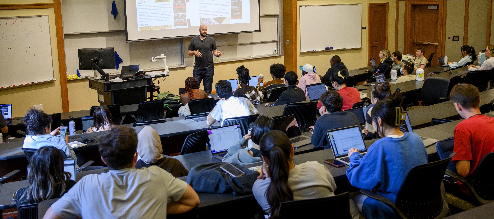

MSI Academic Advising
Academic Advising Overview:
Academic Advising is a process where students envision, execute, and reflect on their academic plans with guidance from a qualified UMSI Academic Advisor. Students share their goals, challenges, and questions with their academic advisor, and their academic advisor contributes knowledge of university and program requirements, policies, and processes. Together, we develop an academic plan that aligns with the student's personal and professional goals.
For information about how to schedule an appointment with your advisor, visit the Connecting with an Advisor page. It may be helpful to review the How to Get the Most Out of Academic Advising page before your appointment.
How can your Academic Advisor help you?
- Creating an individualized academic plan
- Interpreting an academic policy or procedure
- Discussing concerns about a particular course
- Connecting with student support resources and services
- Navigating a disruption to your MSI experience